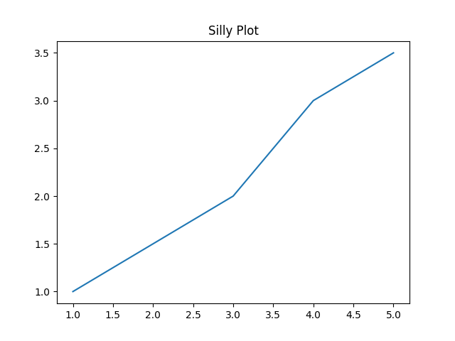
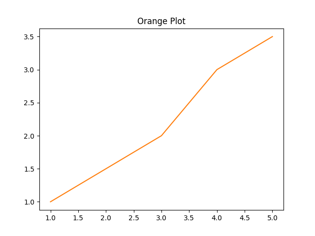

Matplotlib Example
Okay, okay...this is a sort of fake example. Instead of wrapping a whole bunch of matplotlib code, we're just going to bind a little class that wraps some basic plotting functionality. Just pretend it's some cool coworker's code that you want to access from OCaml :)
import matplotlib.pyplot as plt
class Plotter:
def __init__(self):
self.fig, self.ax = plt.subplots()
def set_title(self, title):
self.ax.set_title(title)
def plot(self, x, y, color='tab:blue'):
self.ax.plot(x, y, color=color)
def save(self, filename):
self.fig.savefig(filename)
As you can see, it's a simple class that wraps some matplotlib functionality. This example is a bit different than the first one in that no meaningful values are ever returned from the Python methods. It's all just state internal to the Python objects. While you could probably imagine a nicer interface to this class that hides away all the yuck, we are just going to do a straight binding of the methods as they are.
Unlike the last example, we are not going to bother with exposing the attributes, since the caller won't need them. We will do all the methods though.
Recall that when binding instance methods, the first argument must be t, the last argument must be unit, and the remaining arguments must be named or optional.
Value specs
__init__
This __init__ function takes no arguments, and returns an instance of Plotter.
val __init__ : unit -> t
set_title
set_title takes a single string argument title, (and self of course, but we don't worry about that from the OCaml side). In Python-land, set_title returns None. In cases like this, we want an OCaml function that returns unit.
val set_title : t -> title:string -> unit -> unit
We have unit -> unit because the return type is unit, and the final argument of the function needs to be unit.
plot
The plot function is kind of interesting since it takes an optional argument color. Just because the argument is optional on the Python side doesn't mean that we have to make it optional on the OCaml side, but let's go ahead and make it optional to match the Python API to show you how it's done. (While you could definitely imagine using some sort of variant for a color argument, we will just match the Python and use a string.)
val plot : t -> x:float list -> y:float list -> ?color:string -> unit -> unit
Not bad! You just make it like any old OCaml optional argument.
save
Finally, the save function. Nothing new to talk about so I'll just put down the spec.
val save : t -> filename:string -> unit -> unit
Put those all in a file called val_specs.txt. Here it is for easy copy-pasting.
val __init__ : unit -> t
val set_title : t -> title:string -> unit -> unit
val plot : t -> x:float list -> y:float list -> ?color:string -> unit -> unit
val save : t -> filename:string -> unit -> unit
Run pyml_bindgen
Run the following command to generate the OCaml module.
$ pyml_bindgen val_specs.txt plotter Plotter --caml-module=Plotter --of-pyo-ret-type=no_check > lib.ml
For more info about the options, see the getting started example.
For reference, here is the generated source code after running ocamlformat.
let filter_opt l = List.filter_map Fun.id l
module Plotter : sig
type t
val of_pyobject : Pytypes.pyobject -> t
val to_pyobject : t -> Pytypes.pyobject
val __init__ : unit -> t
val set_title : t -> title:string -> unit -> unit
val plot : t -> x:float list -> y:float list -> ?color:string -> unit -> unit
val save : t -> filename:string -> unit -> unit
end = struct
let import_module () = Py.Import.import_module "plotter"
type t = Pytypes.pyobject
let of_pyobject pyo = pyo
let to_pyobject x = x
let __init__ () =
let callable = Py.Module.get (import_module ()) "Plotter" in
let kwargs = filter_opt [] in
of_pyobject @@ Py.Callable.to_function_with_keywords callable [||] kwargs
let set_title t ~title () =
let callable = Py.Object.find_attr_string t "set_title" in
let kwargs = filter_opt [ Some ("title", Py.String.of_string title) ] in
ignore @@ Py.Callable.to_function_with_keywords callable [||] kwargs
let plot t ~x ~y ?color () =
let callable = Py.Object.find_attr_string t "plot" in
let kwargs =
filter_opt
[
Some ("x", Py.List.of_list_map Py.Float.of_float x);
Some ("y", Py.List.of_list_map Py.Float.of_float y);
(match color with
| Some color -> Some ("color", Py.String.of_string color)
| None -> None);
]
in
ignore @@ Py.Callable.to_function_with_keywords callable [||] kwargs
let save t ~filename () =
let callable = Py.Object.find_attr_string t "save" in
let kwargs =
filter_opt [ Some ("filename", Py.String.of_string filename) ]
in
ignore @@ Py.Callable.to_function_with_keywords callable [||] kwargs
end
Set up the Dune project
Now we need a dune file and a driver to run our plotting code. Save these two files in the same directory in which you generated the lib.ml file.
dune
(executable
(name run)
(libraries pyml))
run.ml
open Lib
let () = Py.initialize ()
let x = [ 1.; 2.; 3.; 4.; 5. ]
let y = [ 1.; 1.5; 2.; 3.; 3.5 ]
let plotter = Plotter.__init__ ()
let () = Plotter.set_title plotter ~title:"Silly Plot" ()
(* See how [color] is optional? *)
let () = Plotter.plot plotter ~x ~y ()
let () = Plotter.save plotter ~filename:"silly_plot.png" ()
let plotter = Plotter.__init__ ()
let () = Plotter.set_title plotter ~title:"Orange Plot" ()
(* Here, we pass the [color] argument. *)
let () = Plotter.plot plotter ~x ~y ~color:"tab:orange" ()
let () = Plotter.save plotter ~filename:"orange_plot.png" ()
And now, go ahead and run that.
$ dune exec ./run.exe
If all goes well, you should see a couple of PNG files there. Here's what they should look like.
The first plot, with default colors:

And the orange plot:

Pretty cool, right?
Wrap up
Okay, so this was kind of a goofy example. It's a little artificial, as you probably would want to just bind to matplotlib directly, but to keep things simple, we just used a simple class that binds some matplotlib functionality.
It did show you some new stuff, though, and we got to make some cute plots! 📈 📊